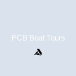

Split Charter Dolphin And Snorkeling Tours
Split Charter
Split Charter Fishing Near Me
Dolphin Charter Near Me
More
Snorkeling And Dolphin Tour
Dolphin Charter Boat
A Dolphin Watch
A Dolphin Swimming
Split Dolphin Tour
Dolphin Split
Blue Dolphin Charters Tours
Dolphin And Snorkeling Tours
Split Charter Dolphin Snorkeling
Dolphin And Snorkeling Tours In Split
Split Boat Tours With Dolphin Watching
Snorkeling And Dolphin Charters In Split
Split Dolphin Spotting And Snorkel Trips
Dolphin Watching And Snorkeling Adventures In Split
Split Marine Tours With Dolphin Encounters
Snorkeling Excursions With Dolphin Sightings In Split
Dolphin Swim And Snorkel Tours In Split
Split Private Charters For Dolphin And Snorkeling
Split Guided Snorkel And Dolphin Watching
Dolphin Spotting Tours Combined With Snorkeling In Split
Split Boat Trips For Dolphin Watching And Snorkeling
Snorkeling And Dolphin Cruise From Split
Split Half-day Dolphin And Snorkeling Tours
Dolphin Encounter And Snorkeling Expeditions In Split
Split Catamaran Tours For Dolphin Watching And Snorkeling
Split Group Tours For Snorkeling And Dolphin Watching
Dolphin Snorkeling Adventures Departing From Split
Split Small-group Dolphin And Snorkel Excursions
Split Full-day Dolphin Watching And Snorkeling Tours
Split Eco-tours Featuring Dolphin Encounters And Snorkeling
Split Family-friendly Dolphin And Snorkeling Trips
Snorkeling Safaris With Dolphin Watching In Split
Split Sunset Dolphin Cruises With Snorkeling
Split Luxury Yacht Charters For Dolphin And Snorkeling Tours
Split Speedboat Tours For Dolphin Spotting And Snorkeling
Split Educational Dolphin And Snorkeling Tours
Dolphin And Snorkeling Combo Tours Departing From Split
Split Multi-day Sailing Trips With Dolphin Watching And Snorkeling
Split Budget-friendly Dolphin Snorkeling Excursions
Split Exclusive Charters For Dolphin And Snorkeling Adventures
Split Wildlife Tours Featuring Dolphin Encounters And Snorkeling
Split Snorkeling Expeditions With Dolphin Watching Included
Split Island-hopping Tours With Dolphin Spotting And Snorkeling
Split Personalized Dolphin And Snorkeling Experiences
Split Guided Boat Tours For Snorkeling And Dolphin Watching
Dolphin And Snorkeling Day Trips From Split
Split Immersive Dolphin Encounter And Snorkeling Tours
Split Private Yacht Rentals For Dolphin And Snorkeling Excursions
Split Underwater Photography Tours With Dolphin And Snorkeling
Split Adventure Tours Including Dolphin Watching And Snorkeling
Split Customizable Dolphin And Snorkeling Packages
Split Adrenaline-pumping Dolphin And Snorkeling Adventures
Split Coastal Tours With Dolphin Spotting And Snorkeling
Split All-inclusive Dolphin And Snorkeling Vacations
Split Snorkeling And Dolphin Sightseeing Expeditions
Split Romantic Dolphin Watching And Snorkeling Tours
Split Snorkel And Swim With Dolphins Experiences
Split Off-the-beaten-path Dolphin And Snorkeling Tours
Split Ultimate Dolphin And Snorkeling Expeditions
Split Diving Trips Combined With Dolphin Watching
Split Thrilling Dolphin And Snorkeling Charters
Split Expert-guided Dolphin And Snorkeling Tours
Split Boutique Dolphin And Snorkeling Experiences
Split Exclusive Dolphin And Snorkeling Charters
Split Vip Dolphin Watching And Snorkeling Tours
Split Marine Biology-focused Dolphin And Snorkeling Tours
Split Adventurous Dolphin And Snorkeling Excursions
Split Sunrise Dolphin Watching And Snorkeling Trips
Split Intimate Dolphin And Snorkeling Adventures
Split Customized Dolphin And Snorkeling Itineraries
Split Snorkeling And Dolphin Watching For Beginners
Split Private Luxury Dolphin And Snorkeling Tours
Split Marine Conservation-focused Dolphin And Snorkeling Trips
Split Thrilling Speedboat Dolphin And Snorkeling Tours
Split Catamaran Dolphin Watching And Snorkeling Expeditions
Split Educational Dolphin And Snorkeling Cruises
Split Personalized Dolphin And Snorkeling Charters
Split Unforgettable Dolphin And Snorkeling Experiences
Split Exclusive Snorkeling And Dolphin Watching Charters
Split Dolphin And Snorkeling Eco-adventures
Split Small-group Dolphin And Snorkeling Tours
Split Luxury Dolphin And Snorkeling Yacht Charters
Split Off-the-grid Dolphin And Snorkeling Excursions
Split Memorable Dolphin And Snorkeling Adventures
Split Family-friendly Dolphin And Snorkeling Tours
Split Thrilling Snorkeling And Dolphin Encounters
Split Private Guided Dolphin And Snorkeling Tours
Split Immersive Snorkeling And Dolphin Experiences
Split Customized Snorkeling And Dolphin Itineraries
Split Thrilling Snorkeling And Dolphin Watching Charters
Split Expert-led Dolphin And Snorkeling Tours
Split Luxury Dolphin And Snorkeling Excursions
Split Unforgettable Snorkeling And Dolphin Trips
Split Small-group Guided Dolphin And Snorkeling Tours
Split Exclusive Dolphin And Snorkeling Experiences
Split Personalized Snorkeling And Dolphin Charters
About Us
Contact Us
HTML Site Map
Last updated:2024 Apr, Mon
No of Pages :
100 pages
1)
index.html
2)
split-charter.html
3)
split-charter-fishing-near-me.html
4)
dolphin-charter-near-me.html
5)
snorkeling-and-dolphin-tour.html
6)
dolphin-charter-boat.html
7)
a-dolphin-watch.html
8)
a-dolphin-swimming.html
9)
split-dolphin-tour.html
10)
dolphin-split.html
11)
blue-dolphin-charters-tours.html
12)
dolphin-and-snorkeling-tours.html
13)
split-charter-dolphin-snorkeling.html
14)
dolphin-and-snorkeling-tours-in-split.html
15)
split-boat-tours-with-dolphin-watching.html
16)
snorkeling-and-dolphin-charters-in-split.html
17)
split-dolphin-spotting-and-snorkel-trips.html
18)
dolphin-watching-and-snorkeling-adventures-in-split.html
19)
split-marine-tours-with-dolphin-encounters.html
20)
snorkeling-excursions-with-dolphin-sightings-in-split.html
21)
dolphin-swim-and-snorkel-tours-in-split.html
22)
split-private-charters-for-dolphin-and-snorkeling.html
23)
split-guided-snorkel-and-dolphin-watching.html
24)
dolphin-spotting-tours-combined-with-snorkeling-in-split.html
25)
split-boat-trips-for-dolphin-watching-and-snorkeling.html
26)
snorkeling-and-dolphin-cruise-from-split.html
27)
split-half-day-dolphin-and-snorkeling-tours.html
28)
dolphin-encounter-and-snorkeling-expeditions-in-split.html
29)
split-catamaran-tours-for-dolphin-watching-and-snorkeling.html
30)
split-group-tours-for-snorkeling-and-dolphin-watching.html
31)
dolphin-snorkeling-adventures-departing-from-split.html
32)
split-small-group-dolphin-and-snorkel-excursions.html
33)
split-full-day-dolphin-watching-and-snorkeling-tours.html
34)
split-eco-tours-featuring-dolphin-encounters-and-snorkeling.html
35)
split-family-friendly-dolphin-and-snorkeling-trips.html
36)
snorkeling-safaris-with-dolphin-watching-in-split.html
37)
split-sunset-dolphin-cruises-with-snorkeling.html
38)
split-luxury-yacht-charters-for-dolphin-and-snorkeling-tours.html
39)
split-speedboat-tours-for-dolphin-spotting-and-snorkeling.html
40)
split-educational-dolphin-and-snorkeling-tours.html
41)
dolphin-and-snorkeling-combo-tours-departing-from-split.html
42)
split-multi-day-sailing-trips-with-dolphin-watching-and-snorkeling.html
43)
split-budget-friendly-dolphin-snorkeling-excursions.html
44)
split-exclusive-charters-for-dolphin-and-snorkeling-adventures.html
45)
split-wildlife-tours-featuring-dolphin-encounters-and-snorkeling.html
46)
split-snorkeling-expeditions-with-dolphin-watching-included.html
47)
split-island-hopping-tours-with-dolphin-spotting-and-snorkeling.html
48)
split-personalized-dolphin-and-snorkeling-experiences.html
49)
split-guided-boat-tours-for-snorkeling-and-dolphin-watching.html
50)
dolphin-and-snorkeling-day-trips-from-split.html
51)
split-immersive-dolphin-encounter-and-snorkeling-tours.html
52)
split-private-yacht-rentals-for-dolphin-and-snorkeling-excursions.html
53)
split-underwater-photography-tours-with-dolphin-and-snorkeling.html
54)
split-adventure-tours-including-dolphin-watching-and-snorkeling.html
55)
split-customizable-dolphin-and-snorkeling-packages.html
56)
split-adrenaline-pumping-dolphin-and-snorkeling-adventures.html
57)
split-coastal-tours-with-dolphin-spotting-and-snorkeling.html
58)
split-all-inclusive-dolphin-and-snorkeling-vacations.html
59)
split-snorkeling-and-dolphin-sightseeing-expeditions.html
60)
split-romantic-dolphin-watching-and-snorkeling-tours.html
61)
split-snorkel-and-swim-with-dolphins-experiences.html
62)
split-off-the-beaten-path-dolphin-and-snorkeling-tours.html
63)
split-ultimate-dolphin-and-snorkeling-expeditions.html
64)
split-diving-trips-combined-with-dolphin-watching.html
65)
split-thrilling-dolphin-and-snorkeling-charters.html
66)
split-expert-guided-dolphin-and-snorkeling-tours.html
67)
split-boutique-dolphin-and-snorkeling-experiences.html
68)
split-exclusive-dolphin-and-snorkeling-charters.html
69)
split-vip-dolphin-watching-and-snorkeling-tours.html
70)
split-marine-biology-focused-dolphin-and-snorkeling-tours.html
71)
split-adventurous-dolphin-and-snorkeling-excursions.html
72)
split-sunrise-dolphin-watching-and-snorkeling-trips.html
73)
split-intimate-dolphin-and-snorkeling-adventures.html
74)
split-customized-dolphin-and-snorkeling-itineraries.html
75)
split-snorkeling-and-dolphin-watching-for-beginners.html
76)
split-private-luxury-dolphin-and-snorkeling-tours.html
77)
split-marine-conservation-focused-dolphin-and-snorkeling-trips.html
78)
split-thrilling-speedboat-dolphin-and-snorkeling-tours.html
79)
split-catamaran-dolphin-watching-and-snorkeling-expeditions.html
80)
split-educational-dolphin-and-snorkeling-cruises.html
81)
split-personalized-dolphin-and-snorkeling-charters.html
82)
split-unforgettable-dolphin-and-snorkeling-experiences.html
83)
split-exclusive-snorkeling-and-dolphin-watching-charters.html
84)
split-dolphin-and-snorkeling-eco-adventures.html
85)
split-small-group-dolphin-and-snorkeling-tours.html
86)
split-luxury-dolphin-and-snorkeling-yacht-charters.html
87)
split-off-the-grid-dolphin-and-snorkeling-excursions.html
88)
split-memorable-dolphin-and-snorkeling-adventures.html
89)
split-family-friendly-dolphin-and-snorkeling-tours.html
90)
split-thrilling-snorkeling-and-dolphin-encounters.html
91)
split-private-guided-dolphin-and-snorkeling-tours.html
92)
split-immersive-snorkeling-and-dolphin-experiences.html
93)
split-customized-snorkeling-and-dolphin-itineraries.html
94)
split-thrilling-snorkeling-and-dolphin-watching-charters.html
95)
split-expert-led-dolphin-and-snorkeling-tours.html
96)
split-luxury-dolphin-and-snorkeling-excursions.html
97)
split-unforgettable-snorkeling-and-dolphin-trips.html
98)
split-small-group-guided-dolphin-and-snorkeling-tours.html
99)
split-exclusive-dolphin-and-snorkeling-experiences.html
100)
split-personalized-snorkeling-and-dolphin-charters.html